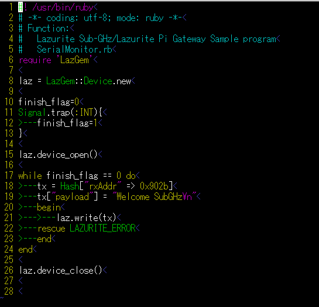

LazGemはLazurite Pi Gateway用のruby libraryです。
1) Lazurite Pi Gateway用ドライバファイルを更新してください
以下の赤字部分を実行していきます。
#以降はコメントなので入力する必要はありません
pi@raspberrypi ~ $
cd driver/
#driverのディレクトに移動します
pi@raspberrypi ~/driver $
git clone
git://github.com/LAPIS-Lazurite/LazDriver.git
#GitHubのサーバーから無線モジュール用ドライバファイルを取得します
Cloning into 'LazDriver'...
remote: Counting objects: 55, done.
remote: Compressing objects: 100% (35/35), done.
remote: Total 55 (delta 16), reused 55 (delta 16), pack-reused 0
Receiving objects: 100% (55/55), 128.18 KiB | 203 KiB/s, done.
Resolving deltas: 100% (16/16), done.
pi@raspberrypi ~/driver $
cd LazDriver/ #ダウンロードしたドライバファイルのフォルダに移動します
pi@raspberrypi ~/driver/LazDriver $
make #ドライバファイルをビルドします。
make -C /lib/modules/3.18.10-v7/build SUBDIRS=/home/pi/driver/LazDriver modules
make[1]: Entering directory '/usr/src/linux-rpi-3.18.y'
CC [M] /home/pi/driver/LazDriver/drv-802154e.o
CC [M] /home/pi/driver/LazDriver/mac-802154e.o
CC [M] /home/pi/driver/LazDriver/phy-bp3596.o
CC [M] /home/pi/driver/LazDriver/i2c-bp3596.o
CC [M] /home/pi/driver/LazDriver/spi-bp3596.o
CC [M] /home/pi/driver/LazDriver/ieee802154e.o
LD [M] /home/pi/driver/LazDriver/DRV_802154.o
Building modules, stage 2.
MODPOST 1 modules
CC /home/pi/driver/LazDriver/DRV_802154.mod.o
LD [M] /home/pi/driver/LazDriver/DRV_802154.ko
make[1]: Leaving directory '/usr/src/linux-rpi-3.18.y'
2) LazGemのインストール
sudo gem install LazGem⏎
ダウンロードするフォルダに移動し次のコマンドを実行してください。
git clone git://github.com/LAPIS-Lazurite/LazGem⏎
cd LazGem\sample⏎
送信用サンプルプログラム
sample_tx.rb
受信用サンプルプログラム sample_rx.rb
送信用サンプルプログラムは正しい送信先に合わせてプログラムの18行目のrxAddr(受信アドレス)を変更してください。

設定した条件で920MHzのデバイスドライバをopenします。
| ch | チャンネル 24~61を指定してください。 何も指定しないと 36を使用します。 ただし、100kbpsのときはch=33を指定しないでください。 |
| panid | PANIDを指定します。任意の0x0000 ～ 0xFFFFを指定してください。 何も指定しないと0xABCDになります。 |
| pwr | 出力パワーを指定します。 1または20を指定してください。 1のときの送信パワーは1mW(0dBm)、20のときは20mW(13dBm)になります。 何も指定しないと20mWになります。 |
| rate | ビットレートを指定します。50または100を指定してください。 50のときは50kbps、100のときは100kbpsになります。 何も指定しないと100kbpsになります。 |
| mode | 2、または3を指定してください。 |
ロードしたモジュールをunloadします。
データの読み出しを行います。
引数:
なし
戻り値
-1 データを受信していないことを示します。
Hash[]でデータを返します。以下のキーに対応しています。
| HASHキー | データ |
| "Command" | 通常は3が戻ってきます |
| "Time" | 受信した時刻の年月日、秒単位の時刻が戻ります。 |
| "usec" | 受信した時刻のusecの単位が返ります。0～999,999が有効範囲です。 |
| "Area" | "JP"が返ります。 |
| "ch" | チャンネル(周波数)です。 |
| "rate" | 現在のビットレートです。 |
| "pwr" | 送信パワーの設定値です。 |
| "header" | 受信したデータのmacヘッダーです。 |
| "rxPanid" | 受信機のPANIDです。rxPanidが-1のとき、受信したデータは受信用PANIDを含んでいません。 |
| "rxAddrType" |
受信アドレスのアドレスタイプが返ります。1は8bitモード、2は16bitモード、3は64bitモードです。 0は受信アドレスが含まれていないことを示します。 |
| "rxAddr" | 受信機のアドレスです。rxAddrTypeの値に従ったデータになります。 |
| "txPanid" | 送信機のPANIDです。rxPanidが-1のとき、送信したデータは送信用PANIDを含んでいません。 |
| "txAddrType" |
送信アドレスのアドレスタイプが返ります。1は8bitモード、2は16bitモード、3は64bitモードです。 0は送信アドレスが含まれていないことを示します。 |
| "txAdd" | 送信機のアドレスです。rxAddrTypeの値に従ったデータになります。 |
| "rssi" | 受信時のRSSI(信号強度)を返します。値は0～255で、255が最大です。 RSSIは、約-35dBmより大きな値で受信したときに255となり、以降-0.25dBm下がるごとに値が1小さくなります。 |
| "payload" | 受信したペイロードです。 |
引数
packetをHASH形式で指定します。
| HASHキー | データ |
| "rxAddr" | 受信機のアドレスです。rxAddrTypeの値に従ったデータになります。 |
| "payload" | 受信したペイロードです。 |
戻り値
なし
例外
パラメータに異常があるか、ACKを受信しないとLAZURITE_ERRORを返します。
エラーの内容は文字列にて表示されますので、それに応じて対処してください。
例外処理の内容は今後、変わりますので注意してください。